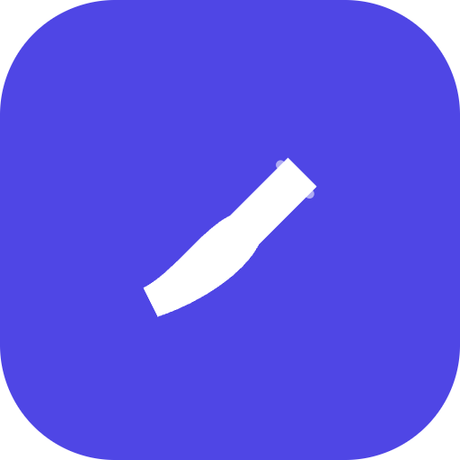

Favicon & app icons
The Sealed mark — a signature-quill flourish on indigo 600. Rounded tile; padding tuned so it reads at 16×16.
16 × 16
32 × 32
48 × 48
64 × 64 (svg)
Apple touch · 180

PWA · 512 maskable
In context
How it reads in the browser tab and on a home-screen tile.
Sealed — Signing App
Sealed